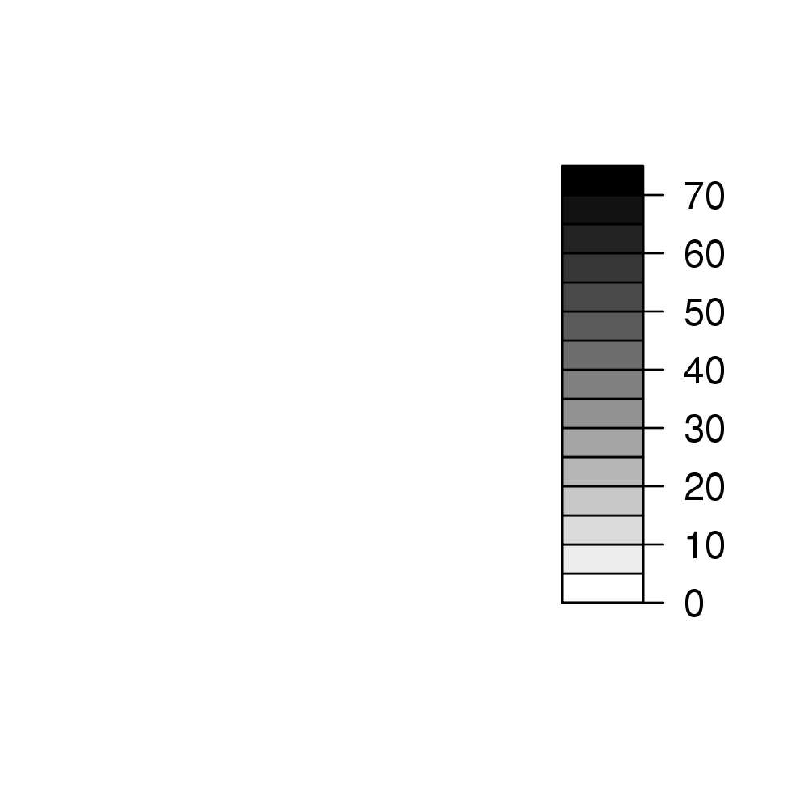
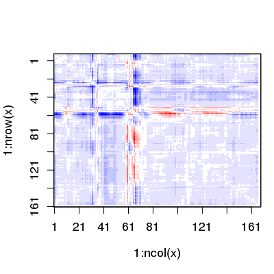

Plot Distance Matrix
Usage
plot(x, key = TRUE, resnum.1 = c(1:ncol(x)), resnum.2 = resnum.1, axis.tick.space = 20,
zlim = range(x, finite = TRUE), nlevels = 20, levels = pretty(zlim, nlevels),
color.palette = bwr.colors, col = color.palette(length(levels) - 1), axes = TRUE,
key.axes, xaxs = "i", yaxs = "i", las = 1, grid = TRUE, grid.col = "yellow",
grid.nx = floor(ncol(x)/30), grid.ny = grid.nx, center.zero = TRUE, flip = TRUE,
...)
Arguments
- x
- a numeric distance matrix generated by the function
dm. - key
- logical, if TRUE a color key is plotted.
- resnum.1
- a vector of residue numbers for annotating the x axis.
- resnum.2
- a vector of residue numbers for annotating the y axis.
- axis.tick.space
- the separation between each axis tick mark.
- zlim
- z limits for the distances to be plotted.
- nlevels
- if
levelsis not specified, the range of 'z' values is divided into approximately this many levels. - levels
- a set of levels used to partition the range of 'z'. Must be *strictly* increasing (and finite). Areas with 'z' values between consecutive levels are painted with the same color.
- color.palette
- a color palette function, used to assign colors in the plot.
- col
- an explicit set of colors to be used in the plot. This argument overrides any palette function specification.
- axes
- logical, if TRUE plot axes are drawn.
- key.axes
- statements which draw axes on the plot key. It overrides the default axis.
- xaxs
- the x axis style. The default is to use internal labeling.
- yaxs
- the y axis style. The default is to use internal labeling.
- las
- the style of labeling to be used. The default is to use horizontal labeling.
- grid
- logical, if TRUE overlaid grid is drawn.
- grid.col
- color of the overlaid grid.
- grid.nx
- number of grid cells in the x direction.
- grid.ny
- number of grid cells in the y direction.
- center.zero
- logical, if TRUE levels are forced to be equidistant around zero, assuming that zlim ranges from less than to more than zero.
- flip
- logical, indicating whether the second axis should be fliped.
- ...
- additional graphical parameters for image.
Description
Plot a distance matrix (DM) or a difference distance matrix (DDM).
Value
Called for its effect.
References
Grant, B.J. et al. (2006) Bioinformatics 22, 2695--2696.T
Much of this function is based on the filled.contour function
by Ross Ihaka.
Note
This function is based on the layout and legend key code in the
function filled.contour by Ross Ihaka. As with
filled.contour the output is a combination of two plots: the
legend and (in this case) image (rather than a contour plot).
Examples
# Read PDB file pdb <- read.pdb( "1bg2" )Note: Accessing online PDB file HEADER MOTOR PROTEIN 04-JUN-98 1BG2# DM d <- dm(pdb,"calpha") # Plot DM ##filled.contour(d, nlevels = 4) ##plot(d) plot(d, resnum.1 = pdb$atom[pdb$calpha,"resno"], color.palette = mono.colors, xlab="Residue Number", ylab="Residue Number")
# Downlaod and align two PDB files pdbs <- pdbaln( get.pdb( c( "4q21", "521p"), path=tempdir(), overwrite=TRUE))Reading PDB files: /tmp/RtmpyefGEQ/4q21.pdb /tmp/RtmpyefGEQ/521p.pdb HEADER ONCOGENE PROTEIN 25-SEP-91 4Q21 . HEADER ONCOGENE PROTEIN 06-JUN-91 521P . Extracting sequences muscle -in /tmp/RtmpyefGEQ/filec1775e7a00dc -out aln.fa -quiet -seqtype protein pdb/seq: 1 name: /tmp/RtmpyefGEQ/4q21.pdb pdb/seq: 2 name: /tmp/RtmpyefGEQ/521p.pdb# Get distance matrix a <- dm(pdbs$xyz[1,])input is raw 'xyz' thus 'selection' ignoredb <- dm(pdbs$xyz[2,])input is raw 'xyz' thus 'selection' ignored# Calculate DDM c <- a - b # Plot DDM plot(c,key=FALSE, grid=FALSE)
plot(c, axis.tick.space=10, resnum.1=pdbs$resno[1,], resnum.2=pdbs$resno[2,], grid.col="black", xlab="Residue No. (4q21)", ylab="Residue No. (521p)")